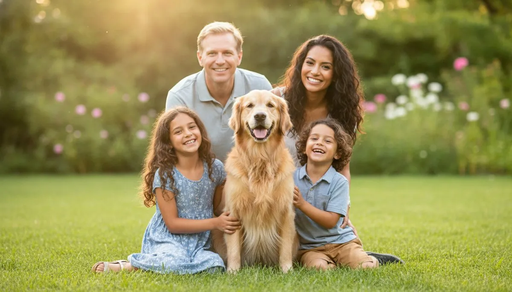
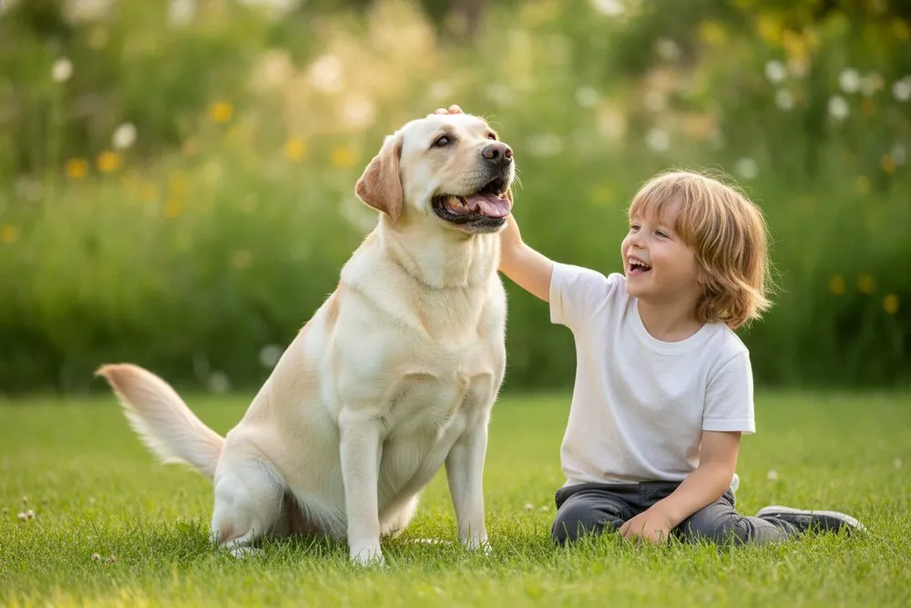
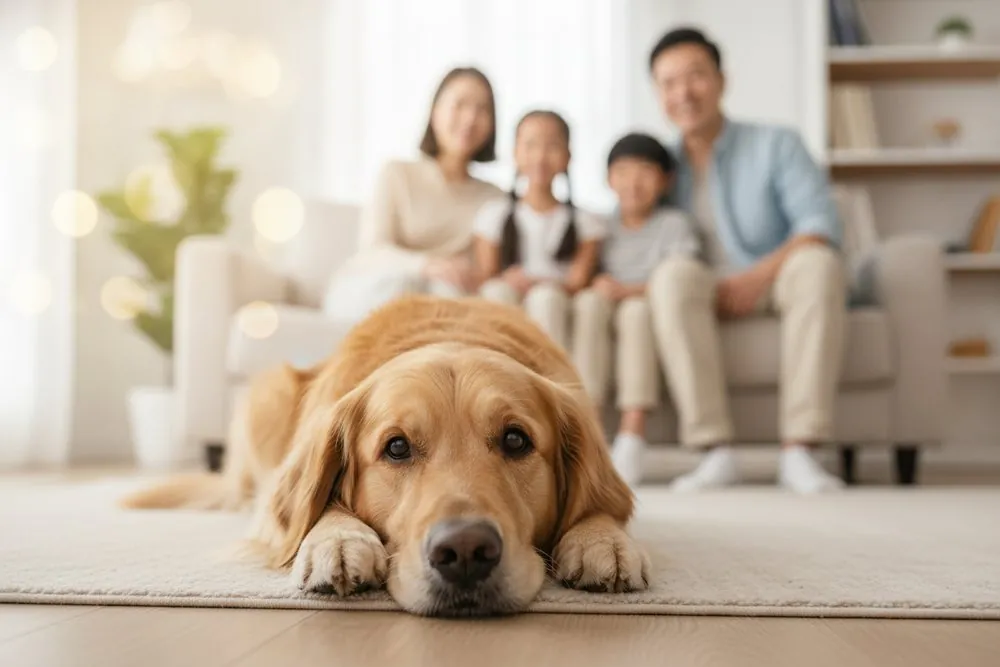
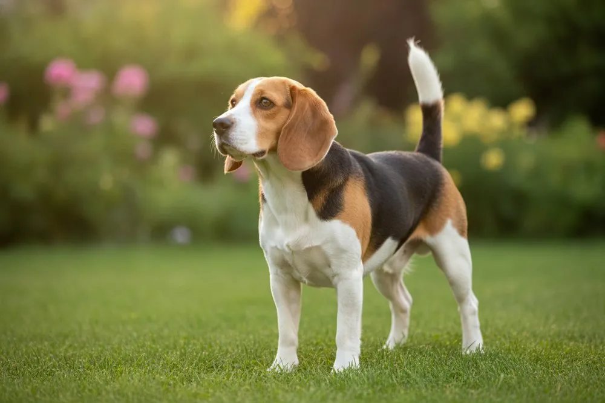
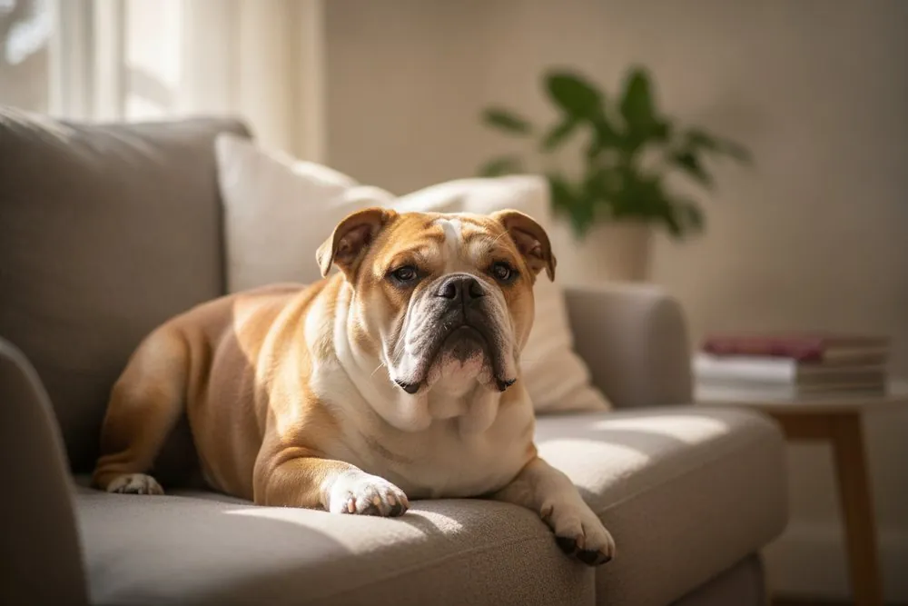
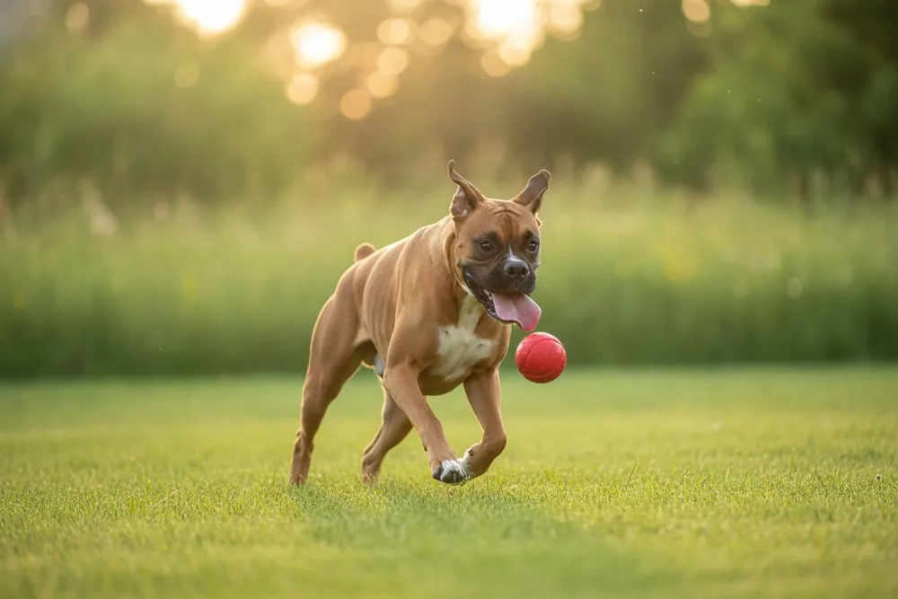
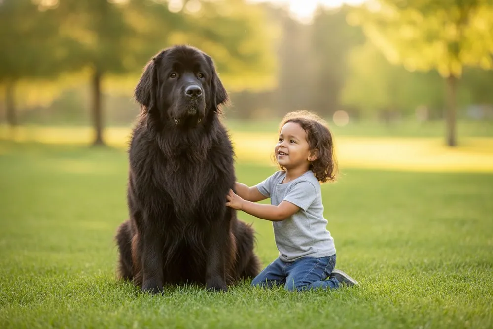
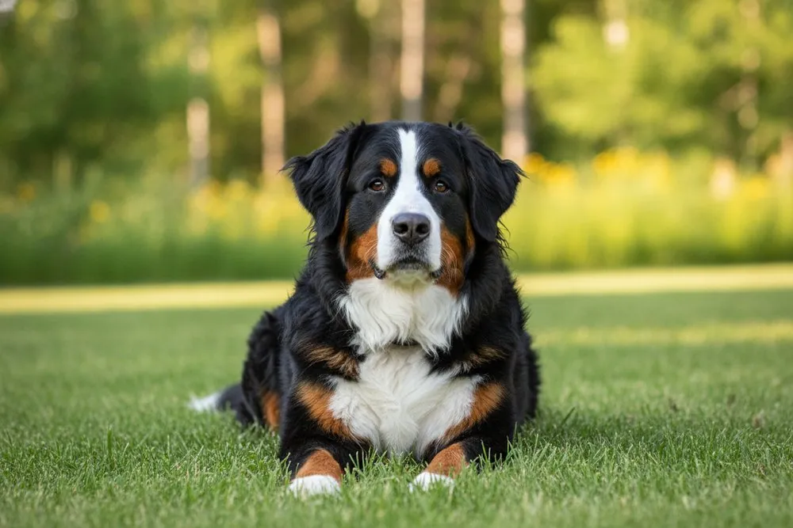
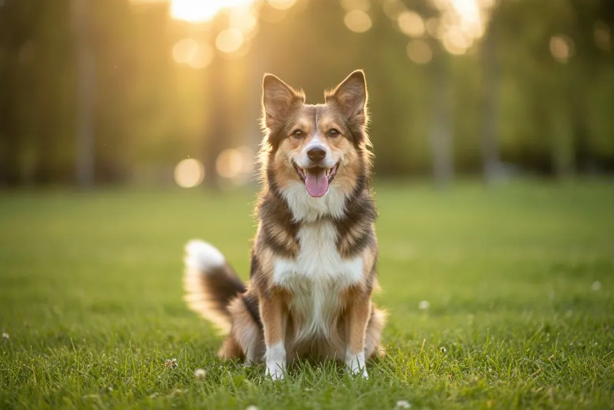
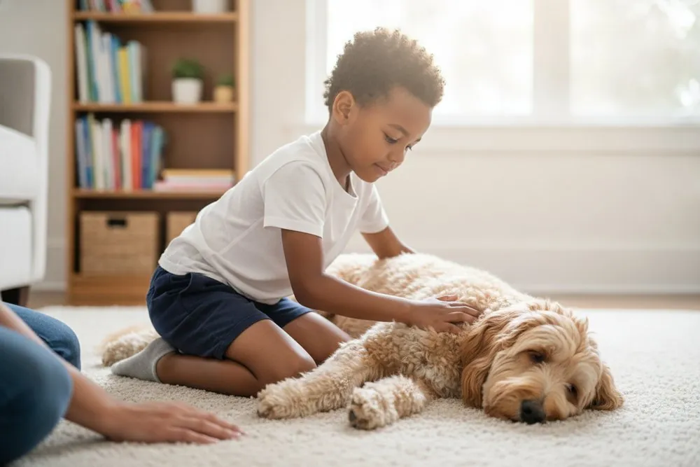

The Best Dog Breeds for Kids & Families

A dog can be the best thing that ever happens to a childhood — a patient playmate, a reason to run around outside, and a daily lesson in empathy and responsibility. Research even links growing up with a dog to lower stress and a stronger immune system. But not every dog suits a busy home with small children, and the wrong match is hard on the kids and the dog.
The good news: a handful of breeds have earned a reputation for being calm, sturdy and endlessly tolerant. One honest caveat first — breed is a starting point, not a guarantee. How a dog is raised, trained, socialized and supervised matters more than any label. Use this to narrow the search, then meet the actual dog.
What actually makes a dog good with kids
- A patient, forgiving temperament — low reactivity to noise, grabbing and sudden movement.
- The right size — sturdy enough to shrug off an accidental stumble, but not so giant it bowls a toddler over. Medium builds are often the sweet spot; toy breeds can be fragile and very large breeds need space and supervision.
- Matching energy — lively enough to keep up with play, trainable enough to switch off indoors.
- People-oriented & trainable — wants to be in the middle of family life and learns house manners easily.
10 family-friendly dog breeds
1. Labrador Retriever
The all-time classic for a reason — soft-mouthed, people-pleasing and remarkably resilient to childhood chaos. Channel the energy with daily fetch and walks; an under-exercised Lab gets mouthy and bouncy. Watch-out: the gangly adolescent stage can knock over toddlers, so teach "four paws on the floor" early.

2. Golden Retriever
Soft-tempered, patient and almost intuitive with children's moods. Brush a few times a week and expect serious shedding. Watch-out: Goldens crave companionship and don't do well left alone all day.

3. Beagle
Sturdy for its size and endlessly merry — bred to live in packs, so it thrives in a busy family. Watch-out: that nose wanders (secure fencing helps), they can be vocal, and they're champion counter-surfers for food.

4. Bulldog
Docile, affectionate and utterly unbothered by noise — the couch companion that tolerates toddler antics. Watch-out: as a flat-faced breed it overheats easily (short walks, cool rooms), and vet costs can run higher.

5. Poodle & Doodle mixes
One of the smartest, most trainable dogs, and low-shedding — a top pick where allergies are a concern. A Standard Poodle is sturdier around young kids than a Toy. Watch-out: budget for grooming every 4–6 weeks, and give that big brain a job or it invents mischief.
6. Boxer
The class clown — goofy, devoted and naturally gentle with "their" children, with a protective streak. Watch-out: strong and exuberant well into adulthood, so early obedience training and toddler supervision are a must.

7. Newfoundland
The original "nanny dog" — calm, sweet-natured and watchful over little ones. Watch-out: sheer size near small children, heavy shedding and drool, a need for cool spaces, and a shorter lifespan (~8–10 years).

8. Cavalier King Charles Spaniel
Cuddly, adaptable and happiest wherever the family is — equally content in a flat or a house. Watch-out: small and a little delicate, so supervise with rough toddlers, and choose health-testing breeders (the breed is prone to heart issues).
9. Bernese Mountain Dog
Mellow, affectionate and rock-steady — a gentle giant that bonds deeply with the whole family. Watch-out: the large size around small kids, a thick coat to groom, and sadly a short average lifespan (~7–10 years), so plan for vet costs.

10. The shelter mixed-breed
Don't overlook rescues. Mixes are often the healthiest, most balanced family dogs, and shelter staff can match a dog's known personality to your home. Watch-out: history is unknown, so choose a rescue that does temperament assessments and ask to meet the dog with your kids.

Breeds to think twice about with very young kids
These aren't "bad" dogs — many are wonderful — but they're a harder fit for a home with toddlers, and it's only fair to say so:
- Tiny / toy breeds (Chihuahua, toy breeds) — fragile enough to be injured by rough handling, and some will snap defensively when frightened.
- High-drive working breeds (Border Collie, Australian Shepherd, Belgian Malinois) — brilliant but need intense exercise and a job, and may try to herd or nip running children. Better suited to experienced, very active families with older kids.
- Large guardian breeds — loyal but strong-willed and best handled by people with breed experience.
Match the dog to your child's age
- Babies & toddlers (0–4): lean toward the calmest, sturdiest, lowest-drive dogs, and expect to manage both closely. A laid-back adult rescue with a known temperament is often easier than a puppy.
- Young kids (5–9): most family breeds shine here — involve the kids in gentle care and simple training.
- Older kids & teens (10+): can handle more active breeds and take on real walking and feeding duties.
Puppy or adult? Puppies are adorable but they nip, aren't house-trained, and need enormous time — a tough combo with toddlers. A calm adult dog with a known personality is frequently the smarter family choice.
How to introduce a new dog to your kids
- Let the dog approach on its own terms — no crowding or chasing.
- Teach kids to offer a treat with a flat hand and pet the chest or shoulder, not the head.
- Create a dog-free zone for the kids and a kid-free zone for the dog (its crate or bed is off-limits).
- Supervise every interaction early on — and never leave under-5s alone with any dog.
- Make "leave the dog alone while it eats or sleeps" a firm house rule.
- Learn the dog's stress signals — lip-licking, yawning, turning away, "whale eye" (whites showing) — and give it a break when you see them.
Keeping kids and dogs safe together

Most problems are prevented by a few simple habits: a quiet retreat the kids leave alone, calm greetings, and adults reading the dog's body language. And because children constantly drop and share food, the whole family should know which human foods are dangerous.
Before a new dog arrives, do a two-minute kitchen check — foods like chocolate and grapes are seriously toxic to dogs. Look up anything in seconds with our free food checker, or print the full list of foods toxic to dogs for the fridge.
Before you bring a dog home
A family dog is a 10–15 year commitment of time, energy and money. Go in with eyes open: our pet cost calculator estimates the real monthly and lifetime cost, and our calorie calculator helps you feed your new friend well from day one. Match the breed's exercise and grooming needs to your routine, and you're setting the whole family up to succeed.